|
GBA Link烧录系统快速上手
（使用最新的4.40版软件)
GBALink烧录系统是GBA/GBA SP游戏机的辅助设备。利用这套系统可以在GBA/GBA SP上运行各种游戏ROM的备份、各种DEMO、各种第三方软件、电子书、漫画书、电影、图片、音乐等，以达到娱乐及学习、开发等用途。
一、烧写系统

GBALink烧录系统(点击图放大）
GBALink烧录系统包括GBALink烧录器、GBALink FLASH卡带、配套光盘、说明书。
二、运行环境
本系统需要与计算机以及GBA游戏机配套使用。计算机要求486以上。GBALink烧录系统支持GBA、GBASP。
三、系统介绍
GBALink烧录器是本系统的烧写装置，当GBALink烧录器与计算机以及GBA连接后，即可完成对配套的FLASH卡带的烧写等功能。
GBALink FLASH卡带是本系统的存储装置，它可反复擦除和烧写。可以用来备份各种ROM文件（如游戏、电影、电子书、电子相册等）。目前的GBALink
FLASH卡带包括ZIP系列、ZIP_SE和ZIP II系列，容量从64M到256M。
配套光盘包括GBALink烧录程序以及其他相关的软件、工具。
四、系统特点
1.性价比高。具备目前市面烧录卡的所有功能，并有独创压缩功能、超强金手指功能、超级记忆系统（SMS）、实时时钟功能四大特色功能。而价格超低，低于同类产品。
2.体积小，重量轻，携带方便。GBALink FLASH卡带为标准小卡，符合多数人的习惯。
3.GBALink烧录器采用USB接口，体积小巧，外形超酷，无需外接电源，支持热插拔，使用方便。
4.GBALink烧录速度特快。对于ZIP系列卡带，烧写满256M的数据仅需4分26秒，平均每烧写64M仅需67秒。
5.保护金手指。GBALink采用新型的烧录方式，通过GBA的通讯口对卡带进行编程的，因而卡带无需经常插拔，能够有效的保护卡带的金手指，最大限度的防止出现接触不良的问题。
6.容易扩展。GBALink的FLASH卡带价格低廉，并支持自己改卡，用户可以轻松拥有多块卡带。
7.配套软件支持多种语言（包括简体中文、繁体中文、英文）。功能智能化，操作简便。
8.支持合卡功能。合卡菜单程序大小动态分配。合卡菜单程序位置动态分配。合卡兼容性极好。
9.支持GBA游戏、NES游戏、GBA格式的电影、电子书、漫画书、图片查看、音乐播放等功能。
10.支持所有的存档方式，存档兼容性好。
11.首创软件可直接加载各种模拟器的ROM文件，无须复杂的手动转换。目前可以直接支持添加NES（就是曾经红遍大江南北的任天堂公司的红白机）的ROM、GB\GBC（任天堂的GAME
BOY\GAME BOY COLOR掌上游戏机）的ROM、PCE（NEC公司的PC-Engine，最强的8位机）的ROM、GG（即世嘉公司的GAME
GEAR掌上游戏机）的ROM、SMS（世嘉公司的Sega Master System游戏机）等众多的模拟器ROM。
12.首创软件可直接加载ZIP格式的文件。
13.首创WINDOWS化图形界面的合卡选择菜单，有图标提示文件类型。界面亲切，操作方便。
14.首创ROM选择菜单的游戏名中文化。并采用游戏名库，自动加载中、英文游戏名，无需手动输入，更加快捷、方便、直观。
15.支持四键复位功能。游戏复位、合卡菜单复位，四键即可完成。切换游戏，无需频繁开关机。
16.支持密码功能。既可对整个卡带加密码，也可对单独ROM加密码。精彩游戏、图书，加密后自己独享。独特的密码设计，可用游戏中的密技当密码（例如最经典的魂斗罗密技：上上下下左右左右BABA），与游戏机按键直接对应，容易记忆，输入方便。
17.世界首创支持压缩功能，可将压缩后的ROM文件直接烧写到卡带中，成倍扩充卡带容量。128M卡带可容纳256M以上的数据量，256M卡带可容纳512M以上的数据量，512M卡带可容纳1G以上的数据容量。由于采用专用压缩格式，解压缩速度超快，解压缩32M的ROM仅需5秒，解压缩64M的ROM仅需10秒，解压缩128M的ROM仅需20秒。
18.支持超强金手指功能。GBALink的金手指功能将给你提供一把游戏利剑，帮你过关斩将。所谓金手指功能是通过对游戏的修改来达到在游戏中加血、加命、无敌、选关、获得超强装备的目的。GBALink的金手指数量巨大，目前已有1359个；GBALink的金手指功能超强，在GBA端提供金手指选择界面，可以任意选择使用。
19.超级记忆系统（SUPER MEMORY SYSTEM）实现了两大功能，一是实现了存档的压缩技术，可支持1xx个游戏同时存档。二是可将存档压缩后备份到卡带的FLASH区域，相当于超大容量的记忆棒功能，即使电池无电，也能保证存档永不丢失。
20.ZIP系列FLASH卡带采用全新的高速FLASH芯片。擦写寿命超过100万次，烧写ROM快速稳定，无需打任何速度补丁，游戏画面运行流畅。
21.ZIP系列FLASH卡带采用EPLD设计，支持合卡功能。ROM区分块更小，256M卡带最多可同时写入256个ROM文件。
22.ZIP2系列卡带超强省电，有效延长游戏时间，并且使用压缩功能将更加省电。
23.ZIP2FLASH卡带系列支持时钟功能，让游戏中的虚拟世界与真实世界同步。
24.卡带采用可充电锂离子电池。无需定期更换电池，存档永不丢失。
25.对ZIP系列卡带可以对已经烧写好的卡带进行修改、删除和添加ROM。
26.自定义软复位、游戏复位、金手指开关等热键，超强兼容性！
27.软件界面可以更换，二十多种风格任你随意选择。
28.软件不断升级，增加更多新功能，潜力无限。
注：ZIP卡带支持的压缩容量分别如下：
ZIP系列卡带的压缩容量为：256M卡带支持64M及以下容量的ROM压缩功能，128M卡带支持32M及以下容量的压缩功能，64M卡带支持16M及以下容量的压缩功能。
ZIP_SE系列卡带的压缩容量为：256M卡带支持128M及以下容量的压缩功能。
ZIPII系列卡带的压缩容量为：256M卡带支持128M及以下容量的压缩功能；128M卡带支持64M及以下容量的压缩功能。
五、安装及设置
1.软件安装
将光盘插入光驱，安装程序会自动运行。按照常规的方法安装完软件。
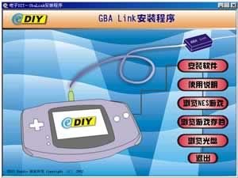
2.硬件安装
GBALink烧录器分为USB版和并口版两种。
USB版
USB版的GBALink烧录器一端是USB插头，用于连接计算机的USB口。一端是GBA插头，用于连接GBA或者GBA SP的通讯口。无需外接电源即可使用。使用时将GBALink烧录器的USB插头插在计算机的USB口上，GBA接口插在GBA顶端的通讯口上即可。此时计算机会提示找到EDIY
GBALink USB设备，然后安装上光盘上的GBALink的USB驱动即可，详细安装方法请查看本说明的“USB驱动安装详解”部分。

USB版的GBALink(点击图放大）
打开GBALink软件，在“系统参数”中的“接口设置”一项中选择“USB”，软件即会提示“检测到GBALink”。
并口版
GBALink烧录器的一端是25针插头，用于连接计算机的打印口（计算机的打印口一般位于计算机的背面）。另一端用于连接GBA或GBA SP的通讯口。无需其他的外接电源。使用时将GBALink烧录器的25针插头插在计算机的打印口上，GBA电缆插在GBA顶端的通讯口上即可。
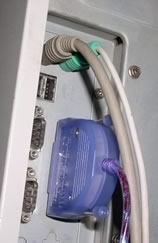 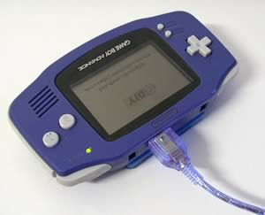
GBALink的连接(点击图放大）
启动GBALink配套软件，打开GBA的开关。在软件的“系统参数”下的“接口设置”选择LPT1-LPT3，程序会提示检测到GBALink。

3.设置系统参数
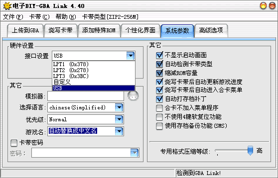
接口设置：如果使用的是USB版，需要设置为USB；如果使用的是并口版，有三项可供选择，一般可选择为：LPT1 (0x378)。也可根据具体情况进行修改。
I/O延迟值设置：如果选择接口为USB，则不会出现这个选项。当选择接口为并口时，才会出现。默认值为0。如果在烧写过程中出现“连接失败”的提示，可把这一项的值增加一级，还不行的话就再增加一级，直到功能正常为止。该项的参数修改后，系统会自动保存，用户只要在第一次使用时调整好，以后不用再修改。
选择语言：这里可以选择软件界面的显示语言。目前可供选择的语言：简体中文、繁体中文、英文。
优先级：这里是调整烧写卡带等操作时的任务优先级。这样如果你的电脑足够的好，并且在烧写卡带等操作数据传输十分稳定，可以把优先级调整为Normal或Low，这样你就可以在烧写卡带等操作时运行其它软件了（比如上网等等）。
游戏名：可选择游戏名的显示方式，游戏名和烧写在卡带中的菜单上显示的名字相同。“自动替换成中文名”指游戏名用中文显示；“自动替换成ROM名”指游戏名用ROM程序内的游戏名显示；“自动替换成英文名”指游戏名用英文名显示。可根据需要进行选择。
不显示启动画面：如果你的计算机比较慢的话，可以选择这一项来跳过GBALink软件的启动画面，以缩短程序的启动时间。
自动检测卡带：如果选中的话，就不用手动进行卡带类型选择了，软件会自动完成选择。
缩减ROM容量：一般的ROM文件都有浪费的空间，选中这个选项程序会自动把这些浪费的空间去掉，这样可以有效减少烧写时间。
烧写卡带后自动更新游戏进度：在烧写卡带完成后如果ROM文件的同一目录下有和ROM文件名相同的存档进度文件(扩展名是SAV)，在烧写完成后会自动更新存档进度文件。
烧写卡带后自动进入合卡菜单：开启这个选项，烧录结束之后GBA自动进入合卡菜单。否则的话，GBA将不进入合卡菜单。
自动打存档补丁：GBA游戏有4种存档方式：SRAM、FLASH、EEPROM、无进度，选中这个选项，程序会自动把FLASH和EEPROM进度存储格式的ROM打补丁，这样游戏就可以在卡带上正确的进行存档了。
合卡不加入菜单程序：在使用具有合卡功能的卡带时，如果你只想写入一个ROM，并且不想加入合卡菜单，可以选中该项。个别游戏由于兼容性问题，当使用合卡方式无法正常运行时，可以选中本项再试。
不使用4键软复位功能：个别游戏由于兼容性问题，当启用4键软复位功能时可能无法正常运行，这种情况可以选中本项取消软复位功能。
卡带密码：选中本项，会对整个卡带加上密码，在GBA上运行时，需要密码才能进入。在PC上设置密码时可以使用密码输入下拉框来选择已经设置好的密码，或者使用特定的按键来手动输入，"I
K J L"是上下左右键，"Z X"是AB键，"A S"是LR键，其中方向键支持4个斜方向。这项功能对ZIP系列卡带和128M专用合卡均可使用。
使用存档备份功能：选中本项，会在卡带中建立一个SMS区域，可将存档数据压缩后写入其中，以保证存档数据永不丢失。
一般情况下，系统参数中的各项使用默认值即可。
4、设置高级选项
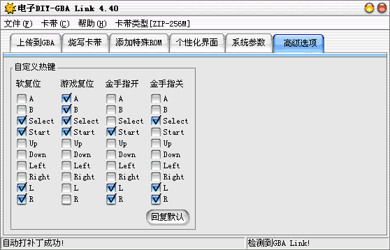
这是GBA Link软件的4.40版新增加的功能。如上图，可进行软复位、游戏复位、金手指开/关的自定义热键设置。一般情况下使用默认值，当某些ROM中存在热键冲突，修改冲突热键即可。
需要注意的是：四个热键设置不能冲突。建议使用缺省设置。
六、烧写卡带
1.选择卡带类型
软件菜单中有卡带选择项，在这里要正确选择你的卡带的类型。例如：如果你使用的是256M的ZIP_SE卡带，需要选择“ZIP_SE系列合卡256M”。需要注意的是，当要选择卡带类型时，要求多页夹“烧写卡带”中的ROM列表是空的。
2.添加游戏
首先是在“烧写卡带”项目下添加ROM。可以直接添加GBA的ROM文件、NES的ROM文件；也可以直接添加ZIP压缩文件。
由于ZIP系列卡带具有压缩功能。所以当使用ZIP系列卡带，在添加ROM时，如果ROM的大小符合条件，会弹出是否要压缩的提示。如果打算使用压缩功能。选择“专用格式”即可。如果不打算使用压缩功能，则可选择“不压缩”。
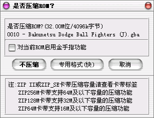
有的游戏加的有片头（比如一些汉化版的游戏），在添加时，会提示是否去掉片头。但有个别游戏如果去掉片头会造成死机等情况，对于这种游戏不能去片头。
注：
普通FLASH卡带只能将ROM原封不动的写入到卡带中，这样128M的卡带就只能当128M的用，256M的就只能当256M的用。但采用了GBALink独创的压缩技术的ZIP系列卡带打破了这种局限。通过GBALink特有的压缩技术，可对ROM进行压缩，使其容量大大减小，这样在卡带中占用的空间就
非常小，同样容量的卡带就可以写入更多的ROM。例如：普通的256M的FLASH卡带只能写入4个64M的ROM，但64M的ROM经过专用技术压缩后大概只有32M，这样256M的ZIP卡带就可以写入8个这样的ROM，8个64M的ROM的实际容量大概是512M，也就是说256M的ZIP卡带可以容纳数据总量达到了512M。

3.烧写
连接好硬件，打开软件，进入等待连接模式。然后单击“智能烧写”按钮即可开始烧写卡带。
烧写完成后，即可在GBA上运行写入的ROM了。

注1：
当我们要对卡带进行“自动检测卡带类型”、“擦除卡带”、“烧写卡带”、“智能烧写”等功能时，需要让GBA进入一种特定的状态：等待连接模式。进入的方法是：首先同时按下游戏机的START键和SELECT键不松手，然后打开游戏机的电源开关，此时你会听到叮咚两声，GBA进入等待连接模式。在等待连接模式下，GBA的屏幕会一直保持“GAME
BOY”字样，而不会运行卡带中的游戏。如果不这样的话，当GBA中插有卡带，而卡带中有内容时，开启GBA就会开始运行该内容，而不能执行其他操作了。

GBA的等待连接模式(点击图放大）
注2：
新卡带一般都是空的，内部没有数据。开机后直接就是等待连接模式，无需执行注1的操作。
注3：
“擦除卡带”的功能是将卡带擦空，“烧写卡带”是将游戏列表中的ROM烧写到空白卡带中，如果卡带有内容则不能使用该项，而要使用“智能烧写”。通常，用户无须考虑卡带是否有内容，添加ROM完毕后，直接执行“智能烧写”即可。
4.追加和删除ROM
对于ZIP系列卡带，即使烧写好游戏的卡带，仍可追加和删除游戏。操作方法如下：
将卡带插入GBA，进入等待连接模式。单击“刷新卡带”，会刷新出卡带内部的游戏列表。然后可以再添加新的游戏，或者删除一个或多个游戏后再添加新游戏，但删除游戏只能从最后一个开始删除。追加和删除完毕后，单击“智能烧写”即可。
“刷新卡带”这项功能不仅可以用于“追加和删除ROM”，还可用于修改已写入卡带内的ROM的属性：修改存档、软复位、金手指、ROM密码。
七、游戏存档的管理
存档管理包括两部分，一部分是在GBA上完成的，一部分是在PC上完成的。可根据需要进行操作。
GBA上的存档管理：
1. 在合卡菜单界面时，按下“START”键可进入SRAM管理界面（即存档管理界面）。本项仅提供查看和删除存档功能，用于解决以下情况：如果进入游戏时因存档备份区空间不足引起不能保存上一个游戏的存档，用户可以选择是否放弃前一个游戏的存档进入游戏或者取消返回合卡菜单，然后可以删除不需要的存档或用SMS功能备份后删除腾出需要的空间。
但是由于使用了存档压缩功能，可以同时支持1xx个ROM同时存档，并且存档的压缩备份和切换由GBA上的软件自动完成，因此通常情况下，用户无须进行该项操作。
2. 在合卡菜单界面时，按下“SELECT”键可进入SMS管理界面（即记忆棒管理界面）。首先有三个选项：“Backup Saver”（备份存档）、“Restore
Saver”（恢复存档）、“Cancel”（取消）。GBA的上下键用来选择，A键是确定，B键是取消。

“Backup Saver”（备份存档）是将当前选中的游戏的存档备份到卡带的FLASH区。按A键进入备份菜单。菜单栏的最上面提示有当前选中的游戏的名称。GBA的左右键用来快速翻页，上下键用来备份位置，选择“NEW”是将存档备份到一个新位置上，执行完成后提示“done”表示备份存档完成。选择某个现有的存档，是将当前的存档覆盖原先该位置的存档数据。在覆盖前，会有提示框，提示是否覆盖，A键是确定，B键是取消，这样可以防止误操作。对于同一个游戏，进行多次备份时，会在游戏名后加序号来区分，第一次备份的序号为01，第二次为02。覆盖同一个游戏的旧存档时，会沿用原先的序号。
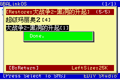
“Restore Saver”（恢复存档）是将FLASH区作为备份的存档恢复到SRAM区供当前选中的游戏使用。按A键进入恢复菜单。菜单栏的最上面提示有当前选中的游戏的名称。GBA的左右键用来快速翻页，上下键用来选择要恢复哪个存档，同一个游戏的多个存档用序号来区分，选中某个存档后，按A键进行恢复，执行完成后提示“done”表示存档完成。

删除存档 在“Backup Saver”（备份存档）界面或者“Restore
Saver”（恢复存档）界面都可以执行删除操作，删除FLASH区的某个存档是用Select键来执行的。删除前会有提示，A键是确定，B键是取消，这样可以防止误操作。
PC上的存档管理：
1.存档数据的备份和更新
操作方法：首先连接好硬件，打开软件，进入等待连接模式。选择菜单中“卡带”一项下的“合卡游戏进度备份及更新”

在弹出的“合卡游戏进度备份及更新”窗口中，选中列表中的某个ROM，单击“备份存档”的按钮是将卡带中该ROM的存档备份到计算机中；单击“更新存档”的按钮是将计算机中的对应该ROM的存档文件更新到卡带中。
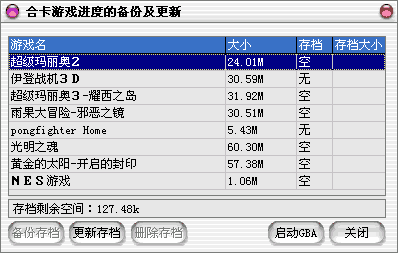
注：
“追加和删除ROM”和“备份和更新存档”功能必须使用与原来烧写卡带时的同一版本软件，否则可能不正常。
2.SMS数据的管理（即记忆棒数据的备份和更新）
在“卡带”菜单下，有三项功能。

“备份卡带的SMS数据”和“更新卡带的SMS数据”是对整个SMS数据进行备份和更新。
“卡带SMS数据管理”是单独对某个游戏存档的SMS数据进行备份，还可以在卡带的FLASH区添加新的SMS数据。如果添加或删除SMS数据，则要执行“写回卡带”命令，才能生效。

八、不插卡带玩游戏功能
这项功能可以在不插卡带的情况下，在GBA或者GBA SP上运行NES游戏或者符合multiboot格式的其它ROM。由于是在GBA或者GBA
SP的内存中运行游戏，因此关机后游戏会丢失。
首先点击多页夹的“上传到GBA”，然后添加ROM，添加ROM的方法同烧写卡带的添加ROM方法。下图就是已经添加好的ROM列表。
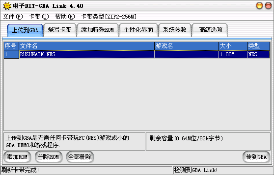
需要注意的是由于GBA内存容量的限制，最大只能上传256K的数据，其中除去模拟器占用的空间(V9.8版的POCKETNES占用47K的空间）其它的空间才能用于上传游戏ROM，这样最大只能上传209K的ROM数据。在程序上显示有剩余的空间大小。不过有很多的NES游戏容量很小，即使209K的空间也足够容纳多个NES游戏。所以我们可以在列表中添加多个NES游戏传到GBA上来玩。
因为不用插卡带，所以无需任何按键，打开GBA电源就会进入等待连接状态。然后点击“传到GBA”就可以把游戏ROM传到GBA上了。在GBALink软件的状态窗口可看到传输进度。传输完毕后，GBA即开始运行NES游戏。
九、软复位功能
在添加好的ROM列表中，可以通过编辑ROM属性来选择是否使用软复位功能。
GBALINK软件的软复位功能具有超强兼容性，对几乎99.5%的游戏都可以使用组合键进行游戏复位和软复位。这项功能仅对ZIP系列卡带有效。

十、金手指功能
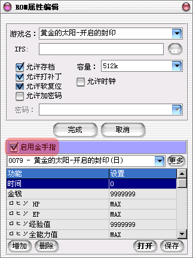
所谓金手指功能是通过对游戏的修改来达到在游戏中加血、加命、无敌、选关、获得超强装备的目的。金手指功能是要利用ZIP卡的特性，所以金手指功能只能使用在ZIP卡上。
金手指功能可以在ROM属性编辑窗口中编辑。具体方法可在已添加好的ROM列表中，双击某个ROM（或者在ROM上单击鼠标右键）会弹出属性编辑窗口。在属性编辑窗口，可以开启或关闭金手指功能，也可以编辑金手指的各个选项。一个ROM的金手指往往有很多选项。比如：生命无限、HP值无限等。如果我们不想使用某项，可以删除某个金手指选项。如果要增加新的金手指选项，也可以手工添加金手指选项。如果某个金手指选项下有多个值，我们还可以通过双击该选项来选择在GBA上可供使用的项目。
通常来说，只要选择“启用金手指”即可，不需要对这些项目进行修改。
如果个别游戏的金手指文件不能自动对应的话，需要单击“更多”的按钮，在弹出窗口的列表中选择。

在GBA上进入有金手指功能的游戏时，会首先进入金手指选择画面。用户可以在此选择打开或关闭某项功能，对于金手指选项非常多的游戏，可以使用快速打开和关闭全部金手指：SELECT+A打开全部金手指，SELECT+B关闭全部金手指。选择完成后按START键会进入游戏，各种金手指功能开始生效。在游戏运行中可以随时开关金手指。使用START+L+R:打开金手指,SELECT+L+R:关闭金手指，并且打开或关闭时GBA画面有暂时白屏提示（对于部分游戏白屏提示功能无效，但开关金手指功能正常）。
在GBA上的金手指界面最上一条选择是“Cheat Initial State（全局金手指初始状态）”。选择为ON（打开）时，进入游戏金手指功能将直接有效。但如果游戏进入时死机，可以把该项值设置为OFF，在游戏中如果要使用金手指时用START+L+R键启用金手指。
十一、密码功能
密码功能可以实现对整个卡带的加密，也可实现对单个ROM的加密。
卡带密码：在系统参数中有“卡带密码”选项，选中本项，会对整个卡带加上密码，在GBA上运行时，需要密码才能进入游戏或者菜单选项。在PC上设置密码时可以使用密码输入下拉框来选择已经设置好的密码，或者使用特定的按键来手动输入，"I
K J L"是GBA的上下左右键，"Z X"是GBA的AB键，"A S"是GBA的LR键，其中方向键支持4个斜方向。这项功能对ZIP系列卡带和128M专用合卡均可使用。
ROM密码：在烧写卡带时，添加的ROM列表中的每个ROM都可以单独加密，具体可以通过编辑ROM的属性来实现。密码的特性和卡带密码相同。不同之处在于，在GBA上，可以出现游戏选择菜单画面，对于加密的ROM，要输入密码才能运行。
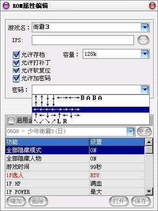
注：因为需要保证密码识别的正确，以及识别斜方向，所以在GBA上输入密码时，按方向键时需要一定的延迟，不能太快。
十二、时钟功能
PC端提供了“时钟同步功能”，这个功能可以自动调整卡带的时钟，令卡带的时钟与PC的时钟同步。具体操作方法：连接好GBALink系统，插好ZIP
II系列卡带，进入等待连接模式。单击“卡带”菜单下的“卡带时钟同步”，会出现“设置卡带时钟”窗口，单击“同步时钟”按钮即可。
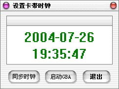
另外在ROM的属性编辑窗口，有一项“允许时钟”，对于目前的所有ROM，软件会自动识别ROM是否支持时钟，而自动选择该项。因此用户一般无需手动修改。只有当以后推出的某个新ROM支持时钟，而该项未开启时，才需要手动选中。

对于ZIP II系列卡带，在合卡菜单界面的右下角可以看到时间显示。按“R”＋“B”健是调整时间。时间的表示方法：年－月－日
[星期] 时:分:秒。例如：2004-07-22 [4] 03:03:02表示2004年7月22日，星期四，3点3分2秒。校准时间用GBA的左右键来切换要修改的项目，用上下键来修改数值。如果要快速切换项目或数值，可以按键不松手。修改完毕后，需要按START键，这样才会保存修改的结果。如果要直接退出，可以按B键。在支持时钟的游戏中，时钟会自动启用。
|